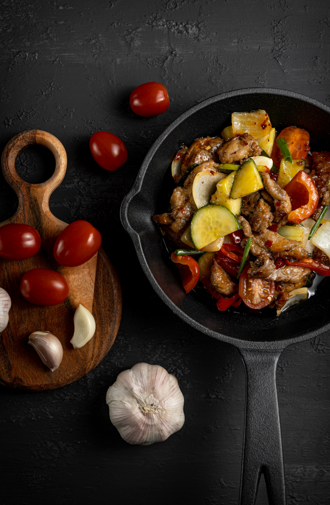

Vegetable Stir Fry

A Quick, Colorful, and Healthy Stir-Fry Packed with Crisp Vegetables and a
Simple Savory Sauce That Makes a Perfect Weeknight Meal
This vegetable stir-fry is a fresh, vibrant dish full of crisp, colorful
vegetables cooked to perfection. The quick stir-fry method keeps the
vegetables tender yet slightly crunchy, while a simple savory sauce brings
all the flavors together. It’s a light, healthy meal that’s satisfying
without being heavy.
Not only is this dish nutritious, but it’s also incredibly versatile. You
can customize it with your favorite vegetables or protein, serve it over
rice or noodles, and adjust the sauce to your taste. It’s perfect for a
quick lunch, dinner, or even meal prep for the week.
Ingredients
- Mixed vegetables (bell peppers, broccoli, carrots)
- Olive oil or sesame oil
- Garlic
- Soy sauce
- Salt and pepper
- Cooked rice or noodles (to serve)
Steps
- Wash and chop all vegetables evenly.
- Heat oil in a pan or wok, then sauté garlic briefly.
- Add vegetables and stir-fry over high heat.
-
Cook until vegetables are tender but still crisp, stirring frequently.
- Add soy sauce and seasonings, tossing to combine.
- Remove from heat once cooked.
- Serve hot over rice or noodles.
Home